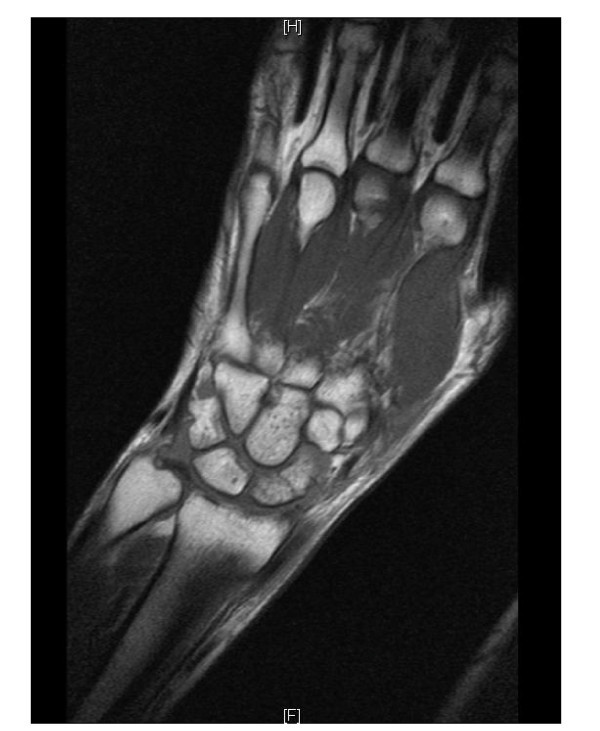

355 — Khuỷu & cổ tay: tennis elbow, TFCC, Kienböck & thuyền / Elbow & wrist
Tags: pattern:co-tay vung:chi-tren
Mức chắc chắn (certainty): tổng hợp y văn (literature synthesis) — nhóm tự biên từ y văn mở, chưa gắn ca nguyên văn đơn lẻ.
1. Tổng quan — gân duỗi chung + sụn chêm cổ tay + xương thuyền thiếu máu
- Viêm mỏm trên lồi cầu ngoài (tennis elbow): gân duỗi chung (ECRB) thoái hóa điểm bám — TẠI SAO đau khi duỗi cổ tay có lực: ECRB chịu kéo lặp đi lặp lại ở điểm bám hẹp.
- TFCC (phức hợp sụn sợi tam giác): sụn chêm + dây chằng cổ tay trụ — TẠI SAO đau mặt trụ + click khi xoay: TFCC chịu tải + ổn định khớp quay-trụ xa.
- Xương thuyền (scaphoid): 70% gãy ở eo + nuôi ngược dòng từ cực xa — TẠI SAO cực gần hoại tử vô mạch: mạch vào từ xa, gãy eo cắt nguồn nuôi cực gần.
2. Gamut đau khuỷu-cổ tay (Gamut)
- Đau điểm bám ngoài + duỗi có lực: tennis elbow — nghỉ + nẹp + chích PRP.
- Đau mặt trụ + click xoay: TFCC — nẹp + nội soi khâu khi rách.
- Hõm lào + sưng + X-quang mờ: gãy thuyền — CT/MRI + vít khi lệch > 1 mm.
- Nguyệt sáng T1 tối + xẹp: Kienböck (hoại tử xương nguyệt) — mổ giảm tải.
3. Bảng so sánh phân biệt (ma trận đối chiếu)
| Thực thể (entity) | Hình ảnh điển hình | Chốt vào (rule-in) | Chốt loại (rule-out) | Gợi ý xác nhận |
|---|---|---|---|---|
| Tennis elbow | Dày + tín hiệu ECRB điểm bám, không đứt | Đau duỗi có lực + điểm bám ngoài | Mất sợi → đứt gân | Nghỉ + nẹp + chích |
| TFCC | Rách sụn trụ + tràn dịch + DRUJ mất vững | Đau trụ + click xoay | Hõm lào + eo → thuyền | MRI + nội soi khâu |
| Gãy thuyền | Đường gãy eo + phù MRI + hõm lào sưng | Hõm lào + CT/MRI (+) dù XR âm 15% | Tròn vỏ kín → xương phụ | Vít khi lệch > 1 mm (cực gần hoại tử!) |
| Kienböck | Nguyệt T1 tối + xẹp + giai đoạn Lichtman | Đau cổ tay + T1 tối nguyệt | Eo thuyền → gãy thuyền | Giảm tải/mổ theo giai đoạn |

Đường gãy eo + phù tủy, XR thường âm tính. Nguồn: Rhemrev et al., Int J Emerg Med 2011 Fig. 5, CC BY 4.0.4. Protocol
- X-quang thuyền 4 hướng + CT/MRI khi hõm lào đau dù XR âm; MRI khuỷu-cổ tay khi gân/sụn.
flowchart TD
A[Ngã chống tay + đau cổ tay] --> B{Hõm lào?}
B -->|Có + XR âm| C[CT/MRI thuyền]
B -->|Đau trụ + click| D[TFCC: MRI + nội soi]
B -->|Điểm bám ngoài| E[Tennis elbow: bảo tồn]
5. Cạm bẫy
- Gãy thuyền XR âm cho về = hoại tử cực gần — hõm lào đau là CT/MRI, bột dự phòng.
- Kienböck tưởng bong gân — T1 tối nguyệt + đau kéo dài là MRI sớm.
- TFCC bỏ sót sau gãy đầu xa quay — đau trụ + DRUJ lỏng là nội soi.
6. Tự lượng giá — Blind Quiz
Ca 1 — Ngã chống tay + hõm lào sưng, XR mờ. Đọc MRI.
- Hỏi: gãy ở đâu? Vì sao cực gần nguy hiểm? Vít hay bột?
Bấm để hiện đáp án
- Dấu hiệu (findings): đường gãy eo xương thuyền + phù tủy lan tỏa.
- Chẩn đoán (diagnosis): gãy eo thuyền — máu nuôi ngược từ xa nên cực gần dễ hoại tử; vít khi lệch > 1 mm, bột + CT khi không lệch.
- Nguồn: Rhemrev et al., Fig. 5, CC BY 4.0.
Ca 2 — Thợ sửa xe đau mặt trụ + click khi vặn: TFCC hay thuyền? (Bảng mục 3.)
Bấm để hiện đáp án
- TFCC: đau trụ + click xoay — MRI + nội soi khâu (thuyền là hõm lào).
Bài liên quan chéo
- 300 – Tổng quan MSK
- 310 – Xương phụ (os centrale giả gãy)
- 321 – Gãy trẻ em (cổ tay trẻ)
Không dùng để chẩn đoán độc lập khi chưa có người hướng dẫn.